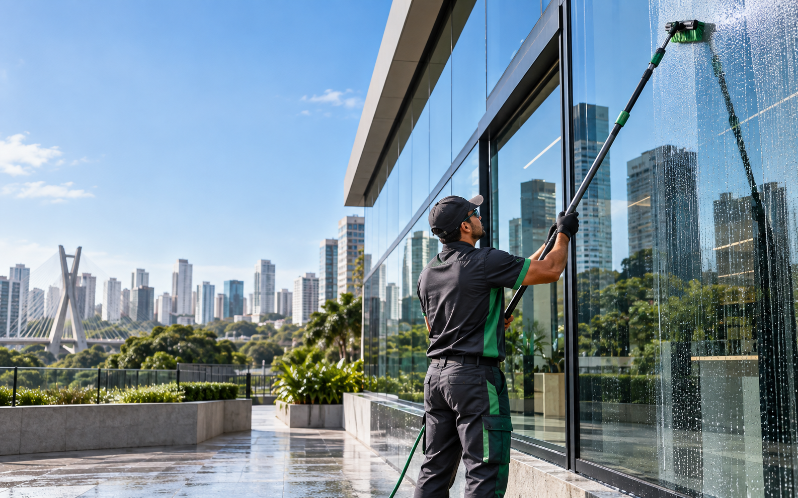
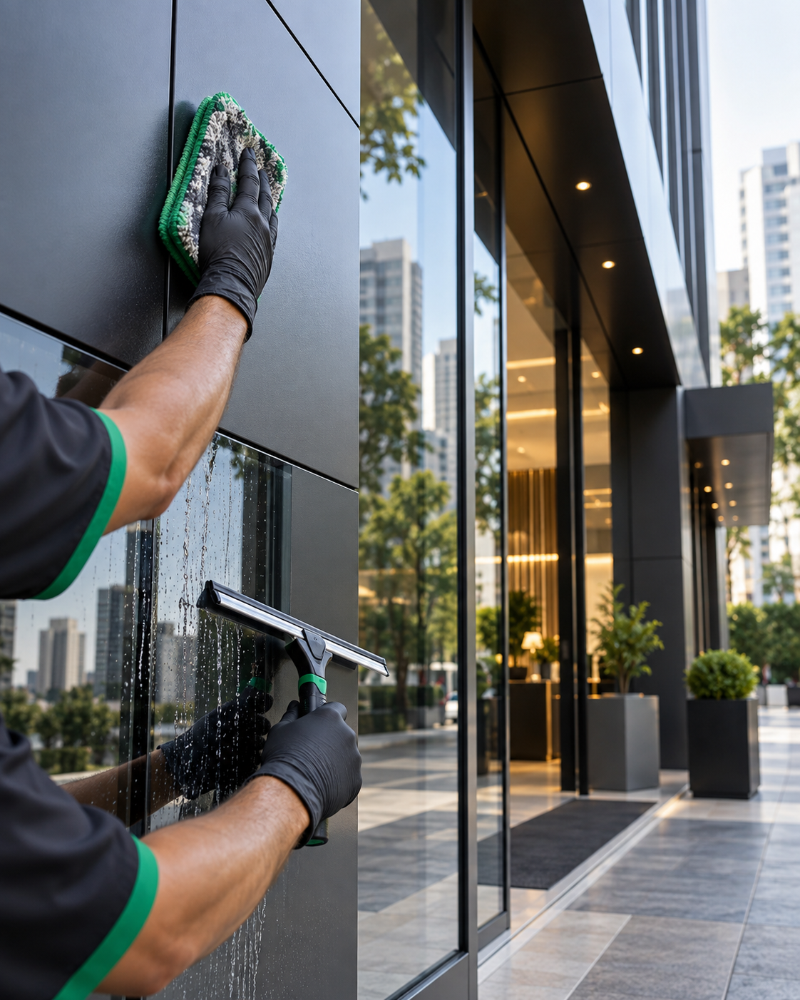

Vidros e vitrines
Transparência, brilho e acabamento uniforme para fachadas, portas, janelas, vitrines e esquadrias.

Limpeza profissional de vidros, fachadas e superfícies especiais com tecnologia, planejamento e atenção absoluta aos detalhes.
com hastes telescópicas, conforme condições do local.
Atendimentos personalizados para empresas, comércios, condomínios e empreendimentos em São Paulo e região.
Transparência, brilho e acabamento uniforme para fachadas, portas, janelas, vitrines e esquadrias.
Remoção cuidadosa de sujeiras para conservar a aparência e a apresentação profissional do imóvel.
Limpeza periódica para remover poeira, poluição e resíduos acumulados sobre os painéis.
Limpeza técnica e atenção aos detalhes para um resultado nítido, uniforme e sem marcas.

de alcance aproximado com hastes telescópicas, conforme o local
A Brilho Santos atende empresas, comércios, condomínios e empreendimentos que buscam qualidade, segurança e alto padrão de acabamento.
Unimos equipamentos profissionais, avaliação técnica e atenção aos detalhes para contribuir com a conservação e valorização de cada ambiente.
Utilizamos sistema profissional de água desmineralizada sob pressão, especialmente aplicado à limpeza de vidros, fachadas e outras superfícies.
A redução de minerais contribui para um acabamento de alto padrão, diminuindo marcas e resíduos após a secagem.
Conheça as principais aplicações do nosso trabalho e como cada solução contribui para a apresentação do seu patrimônio.
Avaliação e uso adequado de equipamentos em cada situação.
Atenção constante ao acabamento e aos detalhes.
Soluções profissionais para aumentar alcance e eficiência.
Responsabilidade com seu patrimônio, ambiente e resultado.
Cada local é único. Por isso, cada serviço começa com uma avaliação e recebe uma solução adequada — com respeito ao patrimônio e atenção em cada detalhe.
Não encontrou sua dúvida? Fale diretamente com a Brilho Santos pelo WhatsApp.
Tirar uma dúvida ↗Atendemos São Paulo e região metropolitana. Envie a localização pelo WhatsApp para confirmarmos a disponibilidade.
Analisamos o tipo de superfície, a área, as condições de acesso e a necessidade do serviço para indicar a solução e preparar o orçamento.
O equipamento pode atingir aproximadamente 16 metros, dependendo da configuração e das condições de cada local.
É água submetida a um processo de purificação que reduz minerais, ajudando a diminuir marcas e resíduos após a secagem.
Entre em contato para avaliarmos a frequência e o formato mais adequado às necessidades do seu estabelecimento.
Preencha os dados e sua mensagem será preparada para envio direto pelo WhatsApp.